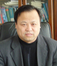

韩增林教授，男，1956年7月出生于山东省商河县，汉族。1978-1982年在东北师范大学地理系学习，获学士学位，1982-1986年在东北师范大学地理系人文地理专业学习，获硕士学位。2000-2003年在东北师范大学城市与环境学院地理系人文地理专业学习，获博士学位。1986-1988年在辽宁师范大学地理系任助教，1988-1993年在辽宁师范大学地理系任讲师，1993-1996年在辽宁师范大学地理系任副教授，1996年破格晋升为教授。现任辽宁师范大学教授、博士生导师、副校长，辽宁师范大学海洋经济与可持续发展研究中心（教育部省属人文社科重点研究基地）常务主任，辽宁师范大学学报理科版常务主编，人文地理学专业（辽宁省重点学科）学科带头人，南京师范大学人文地理学专业兼职博士生导师（从2002年起招生）。同时还兼任中国地理学会理事，辽宁省地理学会理事长，辽宁省国土学会常务理事，大连市科协副主席，政协大连市第十届委员会常委，大连市委市政府咨询委员等职务。
韩增林教授主要从事人文（经济）地理的教学和科研方面工作，先后主讲“中国经济地理”、“工业地理”、“地理学思想史”、“港口与城市”等本科和研究生课程。他长期从事交通运输地理和区域海洋经济地理的研究工作，对海洋交通运输及港口布局进行了深入地研究，同时还在区域海洋经济与可持续发展研究领域作出了重要贡献。他先后主持国家自然科学基金项目“集装箱枢纽港形成演化机理与空间运输网络优化研究”和“东北区物流系统与现代物流业发展及布局研究”二项，国家社会科学基金项目“高速公路经济带形成演化机制与布局规划方法研究”、“海洋对我国沿海地区可持续发展贡献度、作用机制与相关对策研究”和“现代物流业对东北老工业基地振兴的拉动效应、作用机制与空间布局研究”三项，教育部社科重点研究基地重大研究项目“利用海洋缓解我国陆域矛盾的潜力与对策研究”一项，另外还出色完成了科技部、交通部、国家土地局、辽宁省科委、辽宁省教委、大连市科委及横向课题等共30余项。他先后在《地理学报》、《地理研究》、《地理科学》、《人文地理》、《经济地理》、《中国软科学》、《海洋经济》、《地域研究与开发》、《海洋开发与管理》等刊物发表论文60余篇，出版学术著作8部。其中，《大连市土地利用总体规划研究》获1993年度国家土地局科技进步二等奖，《大连口岸集装箱运输环境与腹地集疏运系统优化研究》获大连市2001年度科技进步二等奖和辽宁省2003年度科技进步三等奖，《海洋对我国沿海地区可持续发展的贡献度作用、机制与相关对策研究》获2005年辽宁省第九届哲学社会科学成果奖(首届政府奖)。1995年被评为辽宁省青年先进科技工作者。